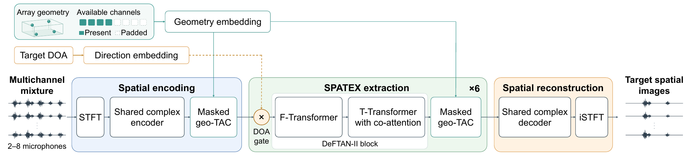

01
Input mixture
Target + two interfering speakers
Submitted to ICASSP 2027
Array-Flexible Multichannel-to-Multichannel
Target Speech Extraction Using Direction Clue
Given microphone coordinates and a target direction, SPATEX extracts the target speech image at every microphone. Explore how a single model reconstructs speech across three different array configurations.
Listen & explore
Select an array, then a microphone. Compare the input mixture, SPATEX output and reverberant target reference.
Loading examples…
The arrow shows direction, not source distance. Click a microphone in the plot or use the selector below.
Download all SPATEX output channels ↗Target + two interfering speakers
Reconstructed target speech
Ground-truth reverberant target
Switch tracks at the same playback time.
Metrics describe this individual six-second example. They are not averages from the paper’s two-second benchmark.
Geometry-aware channel exchange and shared temporal attention coordinate the microphone streams. A shared decoder reconstructs the target image at each microphone, with IPD and coherence supervision preserving interchannel relationships.

All outputs were generated offline using the released variable-array checkpoint, trained with 2–8 microphones. Examples are the first saved scenes matching each geometry and microphone count; no filtering by output score was applied. Playback uses one shared attenuation gain per scene across all signals and channels. Spectrograms also share a common magnitude scale. The downloadable multichannel outputs retain the original floating-point amplitudes.
Speech originates from the LibriSpeech test split, with simulated reverberation. The browser plays precomputed outputs; it does not run the model. Generation details and provenance.